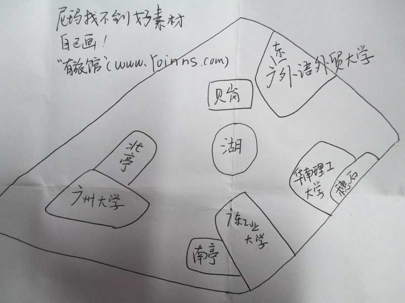

前言：又到了一年一度的国家公务员 考试的时候了，许多人揣着努力和梦想即将走进公务员考试的考场，我们能做的，就是为考场在大学城内的考生提供我们所掌握的有用的住宿、交通信息。
交通: 广州地铁四号线（黄村－金洲）自北向南贯穿大学城，在大学城内设有大学城北、大学城南两个站。
从广州南站可以乘坐地铁二号线到昌岗转地铁八号线再到万胜围转地铁四号线到大学城。
从广州东站、广州东站汽车客运站、广州天河客运站或广州白云机场可以乘坐地铁三号线到客村转地铁八号线再到万胜围转地铁四号线到大学城。
从广州火车站、广州汽车客运站、广东省汽车客运站、或�蚩谄�车客运站可以乘坐地铁五号线到车陂南转地铁四号线到大学城。
住宿:
有旅馆所能提供最准确、最有价值的信息
首先请看有旅馆精心为考生绘制的考场地图：
各位考生可以根据自己考场所在位置就近选择住宿地点（大学城的旅店都集中在图上的4个村子），当然4个村子相距也不远，两两之间步行20分钟左右，乘车更快，房源紧张的可以到其他村子住宿，当然避免房源紧张的最好方法是提前在有旅馆网站上订房。